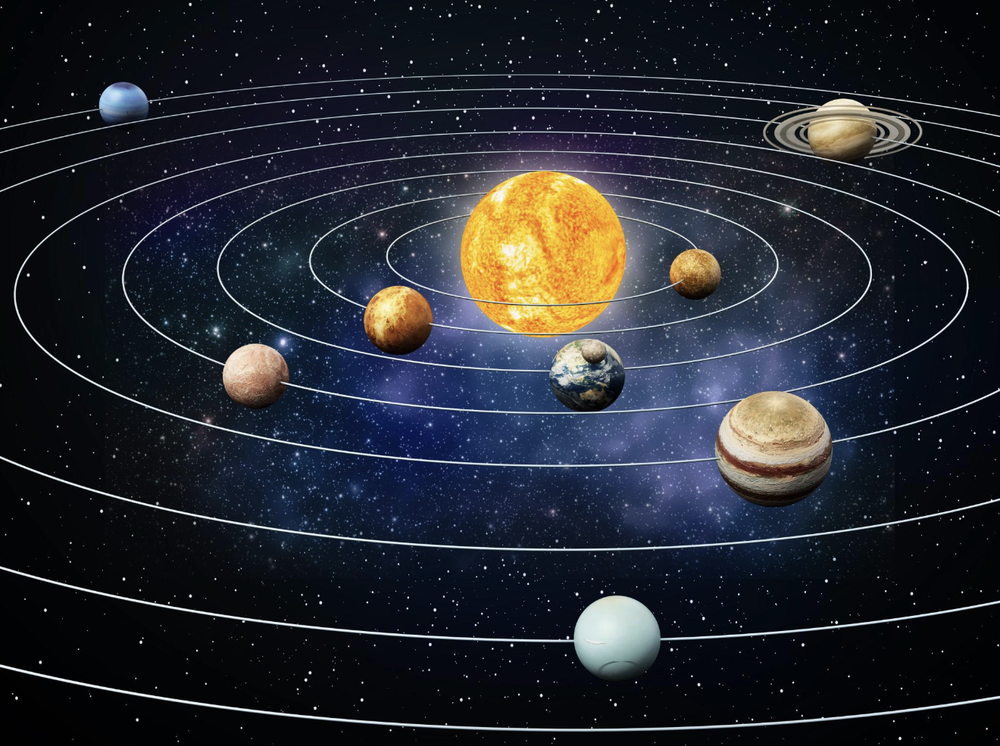

> HALDO CORE GELADEN
> DATEIEN & DATEN VERBUNDEN
> BEREIT FÜR BEFEHLE
💬 HalDo AI Chat
X
–
Willkommen Bruder. Ich bin online und bewege mich. Was möchtest du öffnen?
🗂️ Innere Systeme & Daten
X
📁 Dokumente
🎵 Musik
🎬 Videos
📊 System-Datenbank
⚙️ Software-Updates
☀️ Sonnenkern
X
ENERGIE AKTIV
Die Sonne strahlt und leuchtet hell.
Energie